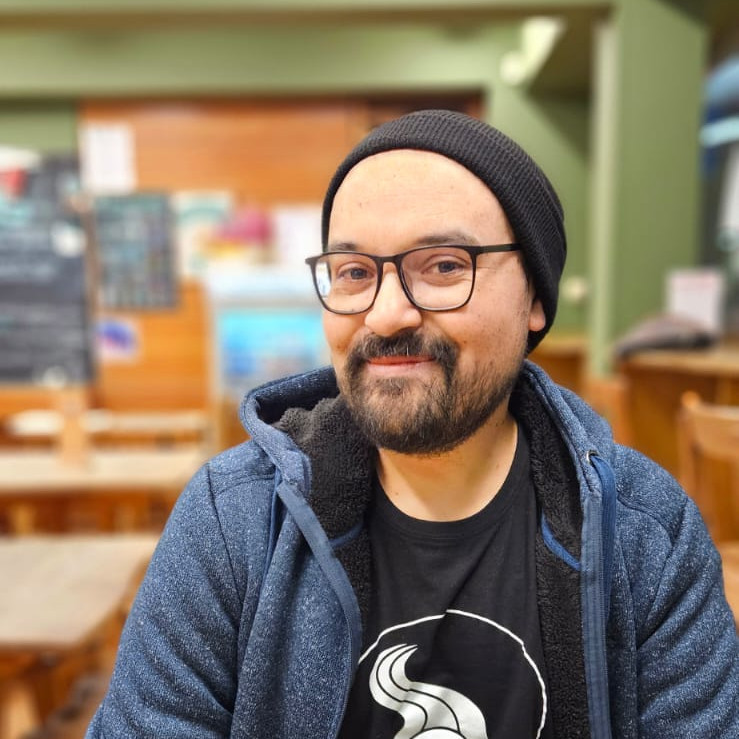

Berríos, A., & Salamanca, G. (2024). Frecuencia fonemática en mapudungun. Literatura y Lingüística, 50, Article 50. https://doi.org/10.29344/0717621X.50.3533 | PDF
Berríos, A., & Salamanca, G. (2024). Efectos morfofonémicos del causativo «-(ü)m» del mapudungun: aspectos sincrónicos y diacrónicos. Forma y Función, 37(2). https://doi.org/10.15446/fyf.v37n2.107627 | PDF
Berríos, A. (2023). Frecuencia fonemática del mapudungun.[Master’ thesis, Universidad de Concepción]. Institutional Repository: PDF
Inostroza Araos, Maria-Jesus, Quero Álvarez, Ester, & Berríos Castillo, Aldo. (2021). Perfil de los participantes de internados de mapuzugun de la organización Mapuzuguletuaiñ. Nueva revista del Pacífico, (74), 361-384. https://dx.doi.org/10.4067/S0719-51762021000100361 | scielo.conicyt.cl | PDF
Berríos, A. (2024, December 5). La morfología del presente es la fonología del pasado: Estudio del surgimiento de las irregularidades morfológicas en mapudungun a partir de procesos fonológicos ancestrales [The Morphology of the Present is the Phonology of the Past: A Study of the Emergence of Morphological Irregularities in Mapudungun from Ancestral Phonological Processes], Jornadas de estudios lingüísticos internacionales SOCHIL-SAEL 2024: Primeras jornadas transcordillera SOCHIL-SAEL online. PDF
Berrios, A. (2024, October 10). Tañi chumken kiñe antü mew: Una experiencia pedagógica en contexto universitario [Reporting a Pedagogical experience at the University level]. Talk for the VII Coloquio sobre Enseñanza y Aprendizaje de la lengua mapuche, Universidad de la Frontera. PDF
Berrios, A. (2024, August 28). From regular phonology to irregular morphology: An amphichronic study of the alternation of causative -(ɨ)m in Mapudungun. Talk for the 2024 Annual Meeting of the LAGB, Newcastle University. PDF
Berrios, A. (2024, July 4). Today’s morphology is yesterday’s phonology: An amphichronic study of the alternation of causative -(ɨ)m in Mapudungun. Poster presentation for the 20th ACTL Summer School, University of York. PDF
Berrios, A. (2024, June 13). Today’s morphology is yesterday’s phonology: An amphichronic study of the alternation of causative -(ɨ)m in Mapudungun. Poster presentation for the PPLS Research Day 2024, University of Edinburgh. PDF
Berrios, A. (2024, June 4). From regular phonology to irregular morphology: An amphichronic study of the alternation of causative -(ɨ)m in Mapudungun. Talk for the 30th Linguistics and English Language Postgraduate Conference, at The University of Edinburgh. Slides PDF
Berrios, A. (2024, April 29). Mapudungun: Sociolinguistis, Research and Revitalisation. Talks for the micro-conference entitled Researching and Revitalising Minoritised Isolates: the cases of Mapudungun and Euskera, organised by A. Berrios & I. Urrestarazu-Porta, at The University of Edinburgh. Slides PDF
Berrios, A. (2024, April 25-26). From regular phonology to irregular morphology: An amphichronic study of the alternation of causative - (ɨ)m in Mapudungun. Talk for the 11th Manchester Forum in LInguistics (MFiL 2024), at The University of Manchester. Slides PDF
Berrios, A. (2024, February 6). The history of the - (ɨ)m causative in Mapudungun: from regular phonology to irregular morphology. Talk for the AMC Catchup Sessions. Slides PDF
Berrios, A. (2023, November 27). N’emülkawe: A learner’s dictionary for Mapudungun. Invited speaker to the lecture Minority Languages II, taught by Dr Maria Mazzoli, University of Groningen (NL). Slides PDF
Berrios, A. (2023, November 6). Invited speaker to the lecture Structure of a Language : Mapudungun, taught by Dr Ben Molineaux, University of Edinburgh (UK). Slides PDF
Berríos, A. (2023, November 2). Phoneme Frequency in Mapudungun. [Poster Session]. 78th Language Lunch, University of Edinburgh, U.K. Poster PDF
Berríos, A. (2023, May 23-25). Frecuencia fonemática del mapudungun. [Conference Session] XXIII Congreso internacional de la Sociedad Chilena de Lingüística, Facultad de Educación de la Universidad Católica Silva Henríquez, Santiago, Chile. Slides PDF
Berríos, A. (2022). Frecuencia fonemática del mapudungun. [Conference Session] 8vas Jornadas Nacionales de Fonética Humberto Valdivieso, Universidad de Concepción. Slides PDF
Berríos, A. (2021). Características acústicas de la reducción del grupo /ej/ asociado a procesos morfofonológicos del mapuzugun. [Conference Session] I Congreso Nacional de Estudiantes de Postgrado en Lingüística de Chile, Santiago de Chile. Slides PDF
Berríos, A. (2021). Diversidad Lingüística en Wallmapu. [Conference Session] Tercera Jornada de Pedagogía Media en Inglés. Universidad de los Lagos.
Berríos, A. (2021). Diccionario de mapuzugun en linea www.azümchefe.cl. [Conference Session] II Jornada de Revitalización lingüística: experiencias desafíos y urgencias en Latinoamérica.
Berríos, A. (2023). Esbozo Gramatical del Mapudungun. Fiwfiw ñi Dungun. PDF
Berríos, A., Urrea, P., Pichún, H., Gutiérrez, C., Llancapan, L. y Guíñez, M. (2023). Mapudungun: Gramática básica ilustrada. Fiwfiw ñi Dungun. PDF
Berríos, A. (2022). Nhemülkawe: Diccionario Mapuzugun – Castellano. Mapuzuguletuaiñ Konse Mew. PDF (Extract)